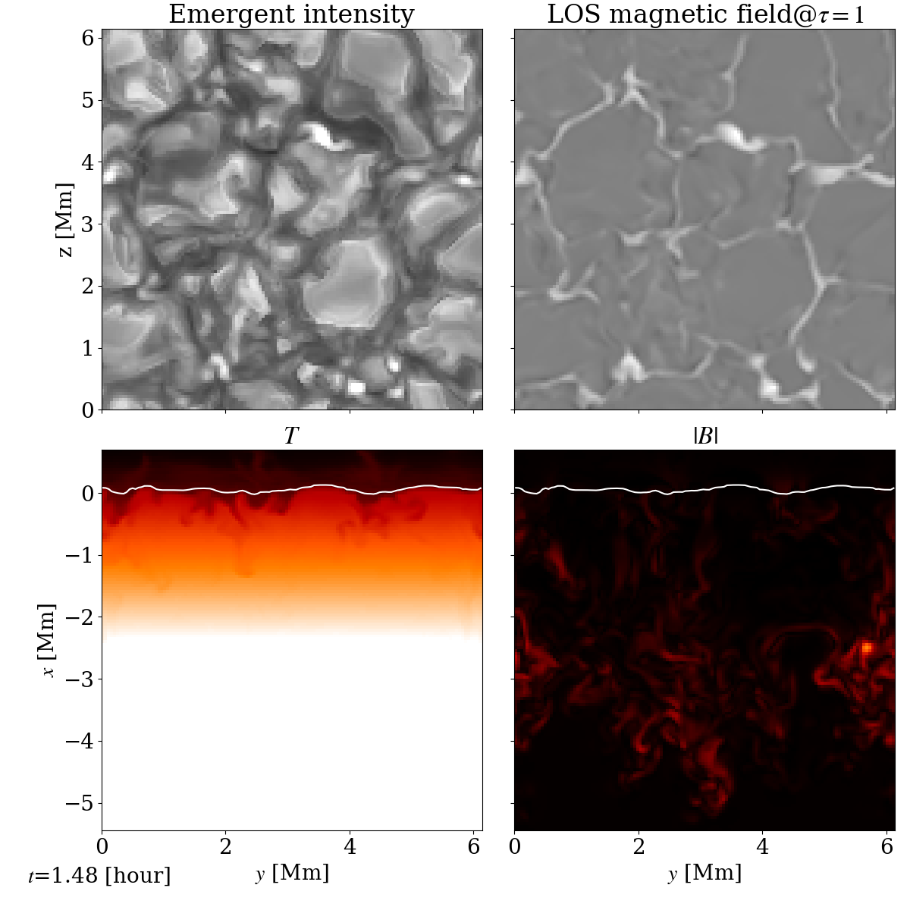

典型的計算例¶
ここでは、典型的計算設定について紹介する。
デカルト座標¶
小規模局所光球計算¶
Vögler et al., 2005 などで行われている小規模局所光球計算の設定を説明する。
- Makefileのオプション
指定するオプションは 光球のみ一様グリッドで計算するので, 複数方向輻射輸送で計算する。指定するオプションは
PPC := -Dremap_2d_assign
- 計算領域・解像度
計算領域は鉛直方向(R2D2ではx方向)にrsun から700 km上から5.444 Mm下までをとる。水平方向(R2D2ではyとz方向)には、6.144 Mmずつとる。
太陽光球を計算するときは、鉛直方向には少なくとも48 km, 水平方向には少なくとも192 kmの格子間隔が必要である。ここでは各方向に48 kmの格子点間隔をとることにして、各方向に128グリッドづつ格子点を用意する。ここではMPIプロセスを2×2×2プロセス使う例を示す。これらの設定は
src/all/geometry_def.F90を編集。integer, parameter, private :: nx0 = 64, ny0 = 64, nz0 = 64 integer, parameter :: ix0 = 2, jx0 = 2, kx0 = 2 ... #ifdef deep ... (ignore this) #else real(KIND(0.d0)), parameter :: xmax = rsun + 0.7d8 real(KIND(0.d0)), parameter :: xmin = rsun - 5.444d8 #endif ... #ifndef ideal real(KIND(0.d0)), parameter :: ymin = 0.d0 real(KIND(0.d0)), parameter :: ymax = 6.144d0 real(KIND(0.d0)), parameter :: ymax = 0.d0 real(KIND(0.d0)), parameter :: ymax = 6.144d0 #endif
と設定する。念のために
integer, parameter :: xdcheck = 2 integer, parameter :: ydcheck = 2 integer, parameter :: zdcheck = 2 ... integer, parameter :: iper = 0, jper = 1, kper = 1
となっているかチェックする。全て
xdcheckなどは2に設定してあると3次元計算となる。iperはそれぞれの方向に周期境界条件を使うかのフラグである。
- 音速抑制法
光球のみ計算の時は、音速抑制法を使う必要は無いので、音速抑制率を常に1に設定する。
src/all/background_init.F90を編集。#ifdef ideal ... (ignore this) #else ... do i = 1,ix00 !xi00(i) = max(1.d0,160.d0*(ro00(i)/rob))**(1.d0/3.d0)*sqrt(dprdro(i)/dprdrob) xi00(i) = 1.d0 ... end do ... #endif
と設定する。
- 境界条件
水平方向は周期境界を用いるので、鉛直方向の境界条件のみを設定すれば良い。 磁場の上部境界条件はポテンシャル磁場の境界条件を用いる。他の設定はVöglerの論文を参照。
src/all/bc_all.F90で設定している。#ifdef ideal ... (ignore this) #else #ifdef deep ... (ignore this) #else call bcx(qq) !call bcx_whole(qq) #endif
とする。
bcx(qq)が実行されるようにする。 また、念のためcall bc_potential(qq)
がコメントアウトされていないかチェックする。
- 輻射輸送
輻射輸送は複数本の光線を解くのが良い。Makefileで
PPC: = -Done_rayを設定しないようにする。
- 初期条件
初期条件は、鉛直方向速度(vx)にランダムな微小速度を与えている。プラージュ領域を計算したい場合は
model_init.F90でbx = 100.d0
とすれば良い.
- 出力アウトプット
ここは本当は完全に自由だが、データの出力の設定である。粒状斑の動きを詳しく見ようと思ったら30秒ほどの時間ケーデンスで出力するのが良い。
main.F90を編集。dtout = 30.d0 ifac = 1.d0
- その他注意事項
model_def.F90でremap_calc.F90で出力するスライスの位置を決定している。integer, parameter :: jc = ny*jx0/2 integer, parameter :: kc = nz*kx0/2
と領域の真ん中を出力することにしているが、状況によって違う場所が出力されている場合がある。もし変なことが起こったらここをチェックしてみると良い。
また、
io.F90の中程に計算の途中に磁場などを追加する設定がある。ここに何か書いてあると初期条件に足してしまうので、add something で検索してcall model_*(*は任意)のところはコメントアウトするように。
- 計算結果
以下のような計算が得られる。

{kind=link}
中規模黒点計算¶
Rempel, 2012 で行われている中規模光球計算の設定を説明する。
- Makefileのオプション
光球のみ一様グリッドで計算するので, :code:`PPC:= -Ddeep`を設定していないかチェック。
- 計算領域・解像度
計算領域は鉛直方向(R2D2ではx方向)にrsun から700 km上から5.444 Mm下までをとる。水平方向(R2D2ではyとz方向)には、49.152 Mmずつとる。
太陽光球を計算するときは、鉛直方向には少なくとも48 km, 水平方向には少なくとも192 kmの格子間隔が必要である。ここでは鉛直方向に48 km、水平方向に96 kmの格子点間隔をとることにして、鉛直方向に128グリッド、水平方向に512グリッドづつ格子点を用意する。ここではMPIプロセスを2×4×4プロセス使う例を示す。これらの設定は
src/all/geometry_def.F90を編集。#ifdef deep ... (ignore this) #elif ideal ... (ignore this) #else real(KIND(0.d0)), parameter :: xmax = rsun + 0.7d8 real(KIND(0.d0)), parameter :: xmin = rsun - 5.444d8 #endif #ifndef ideal real(KIND(0.d0)), parameter :: ymin = 0.d0 real(KIND(0.d0)), parameter :: ymax = 49.152d8 real(KIND(0.d0)), parameter :: ymax = 0.d0 real(KIND(0.d0)), parameter :: ymax = 49.152d8 #endif ... integer, parameter, private :: nx0 = 64, ny0 = 128, nz0 = 128 ... integer, parameter :: ix0 = 2, jx0 = 4, kx0 = 4
と設定する。念のために
integer, parameter :: xdcheck = 2 integer, parameter :: ydcheck = 2 integer, parameter :: zdcheck = 2 ... integer, parameter :: iper = 0, jper = 1, kper = 1
となっているかチェックする。全て
xdcheckなどは2に設定してあると3次元計算となる。iperはそれぞれの方向に周期境界条件を使うかのフラグである。
- 音速抑制法
光球のみ計算の時は、音速抑制法を使う必要は無いので、音速抑制率を常に1に設定する。
src/all/background_init.F90を編集。#ifdef ideal ... (ignore this) #else ... do i = 1,ix00 !xi00(i) = max(1.d0,160.d0*(ro00(i)/rob))**(1.d0/3.d0)*sqrt(dprdro(i)/dprdrob) xi00(i) = 1.d0 ... end do ... #endif
と設定する。
- 境界条件
水平方向は周期境界を用いるので、鉛直方向の境界条件のみを設定すれば良い。 磁場の上部境界条件はポテンシャル磁場の境界条件を用いる。他の設定はRempelの論文を参照。
src/all/bc_all.F90で設定している。#ifdef ideal ... (ignore this) #else #ifdef deep ... (ignore this) #else call bcx_sunspot(qq) !call bcx(qq) !call bcx_whole(qq) #endif
とする。
bcx_sunspot(qq)が実行されるようにする。 また、念のためcall bc_potential(qq)
がコメントアウトされていないかチェックする。
ポテンシャル磁場から少しずらしたい時は、
mhd_def.F90の中でRempel, 2012で定義されている が定義されている。real(KIND(0.d0)), parameter :: potential_alpha = 2.5d0
などとする。
- 輻射輸送
輻射輸送は複数本の光線を解くのが良い。
rte_def.F90を編集する。推奨される設定はlogical, parameter :: rte_multiray_flag = .true. logical, parameter :: rte_linear_flag = .false. integer, parameter :: mhd_rte_ratio = 1
とするのが良い。
- 初期条件
初期条件は、鉛直方向速度(vx)にランダムな微小速度を与えている。 黒点以外は磁場をゼロにしておく。
model_init.F90でbx = 0.d0 by = 0.d0 bz = 0.d0
とすれば良い.
黒点設置のために
model_sunspot.F90を編集。いくつかパラメタがあるが、変えたい時はプログラムのコメントを参照すること。io.F90を編集し、!add something time00 = 0.d0 if(ns == 0 .and. nd == 0) then call model_sunspot endif
とする。デフォルトでは、
call model_sunspotがコメントアウトされていることが多いと思われる。
- 出力アウトプット
ここは本当は完全に自由だが、データの出力の設定である。粒状斑の動きを詳しく見ようと思ったら30秒ほどの時間ケーデンスで出力するのが良い。
main.F90を編集。dtout = 30.d0 ifac = 1.d0
- その他注意事項
model_def.F90でremap_calc.F90で出力するスライスの位置を決定している。と領域の真ん中を出力することにしているが、状況によって違う場所が出力されている場合がある。もし変なことが起こったらここをチェックしてみると良い。
全対流層計算¶
課題
全対流層計算の設定例
深い部分のみの計算¶
Makefileのオプション
PPC: = -Ddeep # 深い層のみ PPC: = -Done_ray # ここでは輻射輸送は解かないがone_rayとしておくことでメモリ節約 PPC: = -Dremap_2d_assign # remapで2次元的に出力する
計算領域・解像度
水平方向には98.304 Mm,
球座標(Yin-Yang格子含む)¶
Yin-Yangで深いところのみの計算¶
- Makefileのオプション
PPC:= $(PPC) -DdeepPPC:= $(PPC) -Done_rayPPC:= $(PPC) -DdeepPPC:= $(PPC) -DsphericalPPC:= $(PPC) -DYinYangPPC:= $(PPC) -DnoFFTWPPC:= $(PPC) -Dremap_2d_assign
- 格子点数
Yin-Yang gridを使うために
ny0*jx0*3=nz0*kx0となるようにする
2次元計算¶
磁束管浮上¶
最終更新日：2021年10月27日